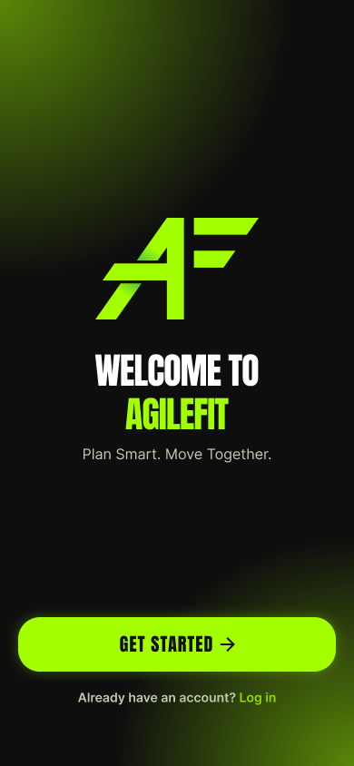

AGILEFIT
FITNESS APP FOR BUSY STUDENTS
A comprehensive human-centered design case study developing an intelligent academic timetable-sync engine and dual-mode workout companion radar to eliminate scheduling paralysis and isolation among university athletes.

COMPETITOR RESEARCH
| Comparison Dimension | Strava |
UpRace |
AgileFit |
|---|---|---|---|
| Target Audience | Dedicated endurance athletes, marathon runners, avid cyclists. | Corporate teams, enterprise CSR events, annual charity runners. | Busy undergraduate students & academic peers balancing rigorous study with fitness. |
| Core Strengths | GPS segment leaderboards, deep post-activity biometrics, prestige social feed. | Corporate team donations, gamified milestone badges, fundraising leaderboards. | Smart workout time suggestions based on the student's existing class schedule and instant buddy workout invites. |
| Accountability Mechanism | Passive "Kudos" and delayed comments posted after a workout is already finished. | Top-down organization distance goals and asynchronous team ranking lists. | Synchronized Real-Time Presence: In-person proximity check-in or live two-way split video workout HUD. |
LIMITED TIME AND EXERCISE PROCRASTINATION
- Students often have to balance class schedules, assignments, and personal activities, making it difficult to find time for exercise. When they have free time, they may also procrastinate on exercising, thinking they can always work out later.
- AgileFit helps students easily identify their free time and quickly schedule workouts, turning those empty time slots into opportunities to stay active.
USER RESEARCH
User Interview & Field Research
We conducted interviews with 9 university students, all aged 21 and living in Ho Chi Minh City. The interviews were conducted from July 21–22, 2026, using a structured qualitative questionnaire covering exercise habits, motivation, barriers, technology use, and desired support systems.
Research Goals
Understand students' current exercise habits and routines.
Identify why they postpone or skip workouts during the week.
Explore factors that influence motivation and day-to-day consistency.
Understand how workload, fatigue, weather, and social factors affect exercise.
Investigate users' attitudes toward fitness tracking and reminders.
Identify what kind of support users actually find helpful.
User Insights & Behavioral Discoveries
Consistency Deficit
Exercise is recognized as essential, yet weekly routine consistency collapses for the vast majority.
Intention–Action Gap
Deadlines and academic burnout induce severe procrastination; good intentions are delayed indefinitely.
Solo Motivation Drop-Off
Individual willpower decays quickly over time without synchronous external nudges and social glue.
Buddy Accountability Factor
Students seek collaborative comradeship and shared streaks rather than toxic public leaderboards.
Environmental Disruptions
Outdoor transit, monsoons, and crowded facilities frequently force last-minute workout cancellations.
Hardware Access vs. App Friction
Students always have their phone during workouts, but current fitness apps are too tedious to maintain.
Core Insight: Flexible Support Over Rigid Demands
Users don't need more motivation to exercise. They need a flexible way to keep exercising when their schedule, energy, or circumstances change. This directly supports a product direction focused on smart exercise suggestions based on users' existing schedules, rather than rigid workout targets.
Target User Archetype: Persona
Trần Hoàng Mỹ An
Exercise is frequently displaced by workload, deadlines, or fatigue.
Verbatim interview response · Participant 3 — explaining the thought that commonly leads to a skipped workout
- –Improve health or manage weight
- –Reduce stress and feel mentally better
- –Relieve stiffness after sitting or studying
- –Sleep better after physical activity
- –Work, study deadlines, or unfinished tasks
- –Laziness, low motivation, and postponement
- –Mental or physical tiredness
- –Rain, heat, or crowded environments
- –Complicated or inaccurate tracking
- –Skip exercise when work takes priority
- –Postpone until later and lose motivation
- –Choose walking on low-energy days
- –Previous routines ended when motivation faded
- –Gentle reminders that don't emphasize missed days
- –Simple activities that fit directly into daily routine
- –Optional social support through friends
- –Minimal manual interaction with tracking
USER ANALYSIS & PROBLEM SOLVING
Balancing Fitness and Academic Schedule
Equipment-Free Micro-Workouts
5–15 minute home workouts that fit easily into study breaks.
Smart Schedule Recommendations
Suggests workouts based on available gaps in the user's academic schedule.
Holistic Time-Boxing Scheduler
Organizes study, exercise, and rest into a balanced daily schedule.
Exercise Procrastination and Low Motivation
Energy-Aware Micro-Commitment
Offers 2–5 minute workouts based on the user's energy level, making exercise easier to start.
Non-Guilt Peer Accountability
Encourages users to exercise with friends through supportive check-ins instead of competition or punishment.
Context-Triggered Adaptive Prompts
Connects exercise reminders to existing routines, such as after finishing a study session.
CORE APP FEATURES & PROTOTYPE
Authentication & Onboarding
Quickly verify student identity using a email or Google/Facebook account. Users can also set privacy permissions for course notes and locations.
Smart Schedule
Sync with Google Calendar to find free time between classes. The app suggests a suitable 20-minute workout and lets users add it with one tap.
Workout Together: Send Invitation
Check friends’ availability in real time. Choose a workout mode and send an invitation instantly. Users can also build a workout streak together.
Workout Together: Remote Workout Together
When friends cannot meet in person because of wheather or distance, they can start a video call and work out together remotely. Both users can see each other and follow the workout at the same time.